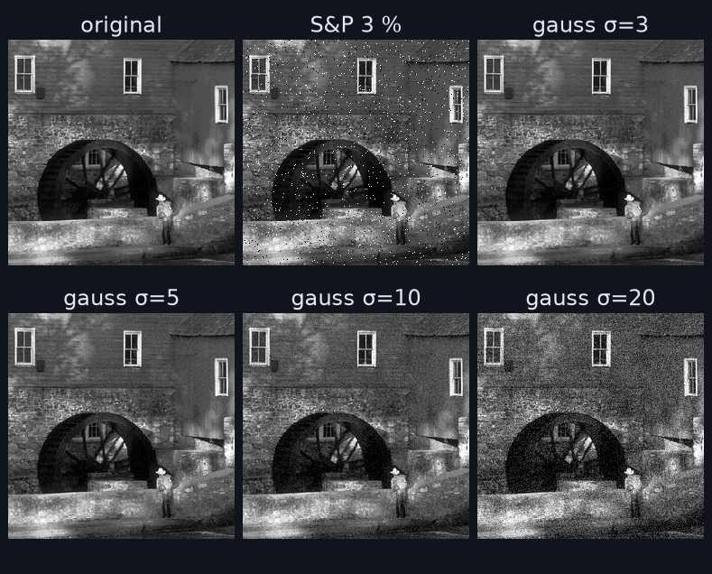
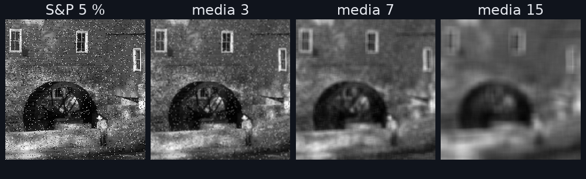
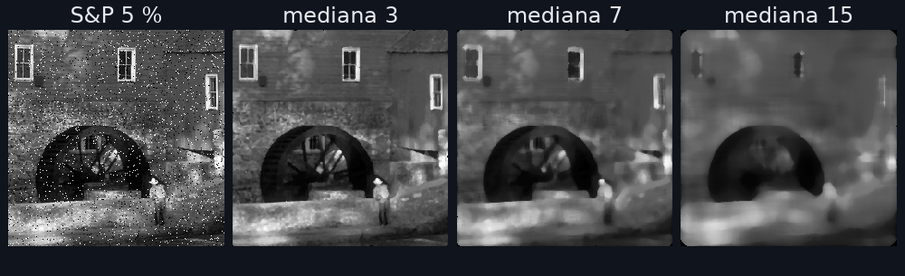
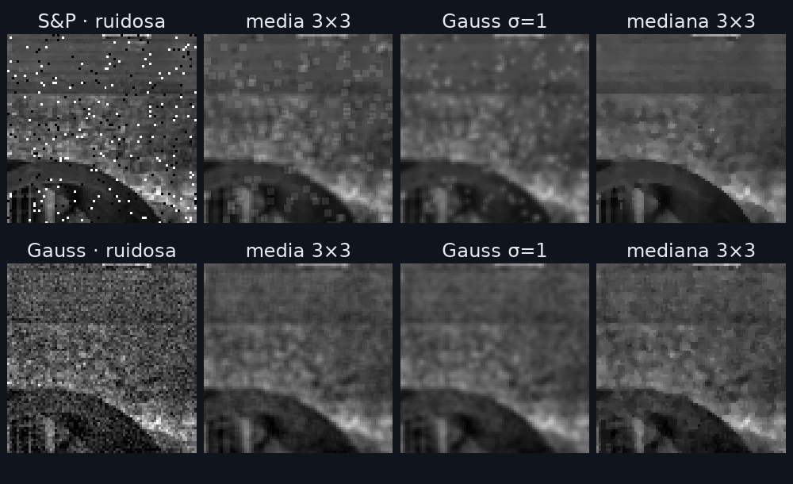
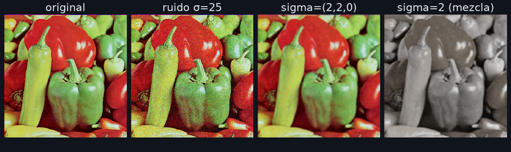
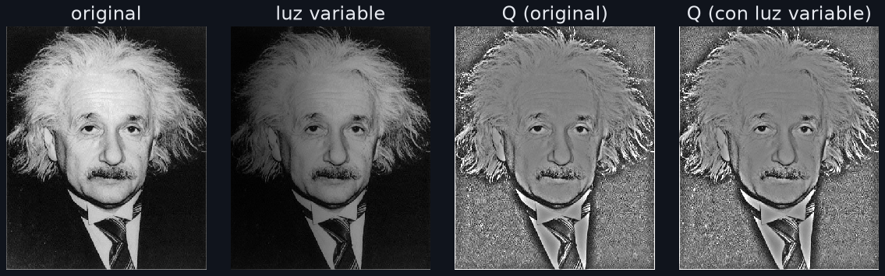
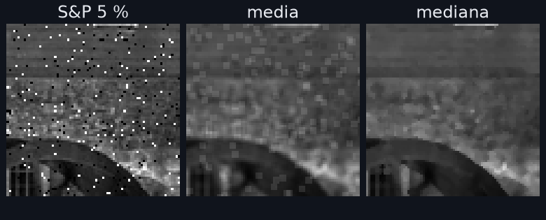
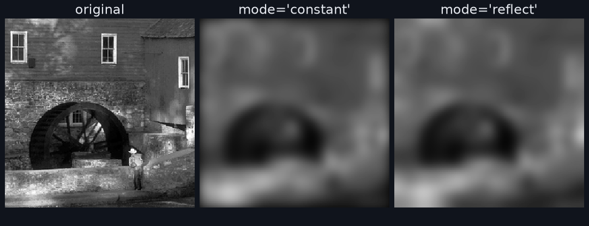
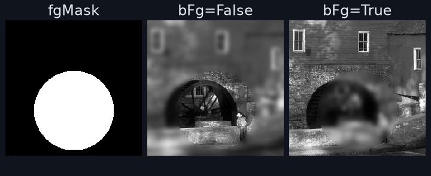

visión por computador · sjk002 · lab 2
Ruido y filtrado espacial
Generar ruido, quitarlo con media, gaussiano y mediana, y saber escribir cada función a mano.
de dónde viene cada función
Imports del lab
import numpy as np from PIL import Image from scipy.ndimage import gaussian_filter, convolve from scipy.signal import medfilt2d import matplotlib.pyplot as plt
scipy.signal.gaussian ya no existe: usa from scipy.signal.windows import gaussian.| función | módulo exacto |
|---|---|
convolve | scipy.ndimage |
gaussian_filter | scipy.ndimage |
median_filter | scipy.ndimage |
medfilt2d | scipy.signal |
gaussian (ventana) | scipy.signal.windows |
randint, normal, rand | numpy.random |
outer, clip, ones | numpy |
Image.open | PIL |
comparar filtros con un número
Calidad: PSNR
def psnr(ref, im):
mse = np.mean((np.asarray(ref, float) - im) ** 2)
return 10 * np.log10(255 ** 2 / mse)
PSNR del ruido gaussiano sobre arch256 (puntos reales, tras np.clip)
bloque b · addSPNoise y addGaussianNoise
Generar ruido
Sal y pimienta con randint o con máscaras, ruido gaussiano con normal y por qué hace falta clip.
sal y pimienta · línea a línea
addSPNoise
def addSPNoise(im, percent):
im_np = np.array(im) # copia como array
shape = im_np.shape # guardar la forma
im_vec = im_np.flatten() # 1D (copia)
N = im_vec.shape[0] # nº de píxeles
m = int(math.floor(percent * N / 100.0)) # nº afect.
locs = np.random.randint(0, N, m) # posic. (repite)
s_or_p = np.random.randint(0, 2, m) # 1 sal, 0 pimienta
im_vec[locs] = 255 * s_or_p # 0 o 255
return im_vec.reshape(shape) # volver a 2D
randint(0, 2, m) da 0 o 1 con igual probabilidad, y 255 * lo convierte en pimienta o sal.funciones nuevas
randint y flatten
| low | mínimo, incluido |
| high | máximo, excluido: randint(0, 2) da 0 o 1 |
| size | entero o tupla: forma del array devuelto |
| retorno | enteros uniformes, con repetición |
| flatten | copia: modificarla no toca la imagen original |
| ravel | vista si es posible: escribir en ella cambia la original |
| reshape | recupera la forma: v.reshape(im.shape) |
a = np.zeros((2, 2)) a.flatten()[0] = 9 # a sigue a 0 a.ravel()[0] = 9 # ahora a[0, 0] == 9 np.random.randint(0, 2, 6) # p. ej. [1 0 0 1 1 0]: nunca 2
ejercicio 5a del examen · versión limpia
S&P con máscaras
def addSPNoise2(im, percent):
p = percent / 100
out = np.array(im) # copia
u = np.random.rand(*im.shape) # U[0,1) por píxel
out[u < p / 2] = 0 # pimienta (prob. p/2)
out[(u >= p / 2) & (u < p)] = 255 # sal (prob. p/2)
return out
(H, W, 3): cada canal se sortea por separado.&, no con and, y cada comparación va entre paréntesis.comprobado: 5 % ⇒ ≈ 5 % de píxeles a 0 o 255 (los que ya valían 0/255 no cambian).
ruido gaussiano aditivo
addGaussianNoise
def addGaussianNoise(im, sd=5):
noisy = im + np.random.normal(
loc=0, scale=sd, size=im.shape)
return np.clip(noisy, 0, 255)
np.clip. Con uint8 la suma pasa a float64: no desborda, pero se sale de rango.| loc | media μ; en ruido aditivo es 0 |
| scale | desviación típica σ (no la varianza) |
| size | im.shape: un valor por píxel (y canal) |
píxel de valor 240 + ruido con σ = 20: valor resultante
resultados reales
Ruido sobre arch256

Barras: histograma real del ruido con σ = 5. Curvas: la teoría. σ = 20 es el doble del máximo que propone el lab.
S&P: pocos píxeles, error enorme. Gaussiano: todos los píxeles, error pequeño.
bloque c · media, gaussiano y mediana
Filtros
Dos filtros lineales (convoluciones) y uno no lineal, con su ficha y su PSNR real.
filtro de media
averageFilter
def averageFilter(im, filterSize):
mask = np.ones((filterSize, filterSize))
mask = mask / np.sum(mask) # suma 1
return convolve(im, mask)
n * n, mask.size o directamente np.ones((n, n)) / n**2.[100, 101, 104] da 101,67 en el centro y se guarda 101. Convierte antes a float.| input | array n-dimensional (imagen) |
| weights | núcleo, con las mismas dimensiones |
| mode | 'reflect' por defecto; también 'constant', 'nearest', 'mirror', 'wrap' |
| cval | 0.0, valor si mode='constant' |
| retorno | mismo tamaño y mismo dtype que la entrada |
np.ones((3, 3)) / 9: nueve pesos iguales que suman 1, así que una zona plana no cambia de nivel.
ejemplo numérico
Media: impulso y borde
y un borde ideal (discontinua) se convierte en una rampa de ancho n
Un único píxel de sal se reparte en una mancha gris: no desaparece. Por eso la media es mala contra sal y pimienta.
gaussiano de scipy
gaussianFilter
def gaussianFilter(im, sigma=5):
return gaussian_filter(im, sigma)
# imagen en color: no mezclar canales
gaussian_filter(im_rgb, sigma=(s, s, 0))
blurFgBk) y color: el 0 en la tupla significa «no suavizar el eje de canales».| sigma | escalar o tupla, uno por eje |
| mode | 'reflect' por defecto |
| truncate | 4.0: se corta la gaussiana a ±4σ |
| retorno | mismo dtype que la entrada |
lado de la máscara que usa scipy según σ
no confundir
Dos gaussianas distintas
La del ruido: distribución del valor que se suma a cada píxel. σ = cuánto ensucia.
La del filtro: pesos del núcleo según la distancia en píxeles. σ = cuánto emborrona.
Mismo nombre, papeles opuestos: σ grande en el ruido empeora la imagen; σ grande en el filtro la desenfoca más.
mediana
medianFilter
def medianFilter(im, filterSize):
return medfilt2d(im, filterSize)
# alternativa de ndimage (reflect; sirve en color)
median_filter(im, size=n)
median_filter(im_rgb, size=(n, n, 1))
medfilt2d rellena con ceros: las esquinas se oscurecen. median_filter usa 'reflect'.| input | array 2D (en versiones antiguas, solo uint8, float32 o float64) |
| kernel_size | entero impar o (m, n); por defecto 3 |
| no lineal | no es una convolución: ordena la ventana y toma el valor central |
ventana 3×3 con un píxel de sal (de ejemplo)
Ordenada, el 5.º valor es la mediana = 14: el 255 queda en un extremo y se ignora. La media daría 40,8.
sal y pimienta al 5 % · resultados reales
Media frente a mediana


discontinua: sin filtrar, @@T_SIN_SP@@ dB
arch256 · mismo ruido para todos · dB
PSNR de cada filtro
| filtro | S&P 5 % | Gauss σ = 20 |
|---|---|---|
| sin filtrar | @@T_SIN_SP@@ | @@T_SIN_G@@ |
| media 3 / 7 / 15 | @@T_AVG_SP@@ | @@T_AVG_G@@ |
| gauss σ = 1 / 2 / 4 | @@T_GAU_SP@@ | @@T_GAU_G@@ |
| mediana 3 / 7 / 15 | @@T_MED_SP@@ | @@T_MED_G@@ |
gauss σ = 20 · tamaño 1, 2, 3 = columnas de la tabla
Todos mejoran con el tamaño pequeño y empeoran al crecer: se pierde detalle.
Contra S&P gana la mediana pequeña. Contra gaussiano gana el gaussiano, con margen pequeño.
bloque d · ejercicios 1 a 8 del lab
Ejercicios
Tabla ruido × filtro, separabilidad, gaussiano explícito, color, imagen cociente y bordes.
ejercicio 1 · tabla ruido × filtro
E1: ruido × filtro
for nr, sucia in ruidos.items(): # S&P 5 %, gauss σ = 20
for nf, f in filtros.items(): # media, gauss, mediana
print(nr, nf, psnr(im, f(sucia)))
| ruido | sin filtrar | media 3×3 | gauss σ=1 | mediana 3×3 |
|---|---|---|---|---|
| S&P 5 % | @@E1_SP_0@@ · malo | @@E1_SP_1@@ · regular | @@E1_SP_2@@ · regular | @@E1_SP_3@@ · bueno |
| Gauss σ=20 | @@E1_G_0@@ · malo | @@E1_G_1@@ · regular | @@E1_G_2@@ · bueno | @@E1_G_3@@ · regular |
ejercicio 1 · recortes 80×80 de arch256
E1: cómo se ve

Fila S&P: media y gaussiano convierten cada punto en una mancha; la mediana los quita.
Fila gaussiano: los tres suavizan; la mediana deja un grano más irregular.
ejercicio 2 · averageFilterSep
E2: media separable
def averageFilterSep(im, n):
row = np.ones((1, n)) / n # máscara 1×n
return convolve(convolve(im, row), row.T)
h_c (3×1)
h_r (1×3)
h_2D (3×3)
n = 3: 9 productos por píxel con la 2D, 6 con las dos 1D. Con n = 15: 225 frente a 30.
tiempos reales sobre arch512, ms
E2: coste medido
tiempo (ms) según el tamaño n de la máscara
tiempo (ms) según el lado N de la imagen, con n = 15
Con n = 15 la separable es @@E2_X15@@× más rápida; con n = 31, @@E2_X31@@×. La 2D crece como n² y la separable casi lineal. (Medidas en esta máquina.)
ejercicio 3 · n = 15, sigma = 4
E3: gaussiano explícito
from scipy.signal.windows import gaussian gv1d = gaussian(n, sigma) # (a) pico = 1, suma ≠ 1 gv1d = gv1d / gv1d.sum() # normalizar: suma 1 gv2d = np.outer(gv1d, gv1d) # (b) n×n out = convolve(im, gv2d) # (c) máscara 2D col = gv1d[:, None] # (d) separable: n×1 out = convolve(convolve(im, col), col.T)
gv1d normalizado (15 muestras), ×10⁻³; pico @@G1D_MAX@@, extremos @@G1D_MIN@@
gv2d = outer (15×15): más claro, más peso. Suma 1 porque (Σg)² = 1.
la gaussiana 2D es un producto
Por qué np.outer funciona
n = 5, σ = 1: g = (54, 244, 403, 244, 54) ×10⁻³; G = g gᵀ en ×10⁻³
Matriz de rango 1 (comprobado con matrix_rank): por eso el filtro es separable.
ejercicio 4 · peppers RGB, sd = 25
E4: ruido en color
ruido = addGaussianNoise(im, 25) # ya vale con (H, W, 3) bien = gaussian_filter(ruido, (2, 2, 0)) # 0: no mezclar canales mal = gaussian_filter(ruido, 2) # mezcla R, G y B

(σ, σ, 0) da lo mismo que filtrar cada banda por separado.ejercicio 5 · normalizar la iluminación
E5: imagen cociente
def quotientImage(im, sigma):
return im / (gaussian_filter(im, sigma) + 1e-6)

Si I = R·L (reflectancia × luz suave), la luz L casi no cambia en el entorno de σ y se cancela. Correlación entre Q de ambas: @@E5_CORR@@, frente a @@E5_RAW@@ entre las imágenes.
ejercicios 6 y 7 · subtítulos y región
E6 y E7: showInGrid
def showInGrid(imgs, m, n, title='',
subtitles=None, region=None):
fig = plt.figure()
for i, im in enumerate(imgs):
ax = fig.add_subplot(m, n, i + 1)
if region is not None: # (r0,r1,c0,c1)
r0, r1, c0, c1 = region
im = im[r0:r1, c0:c1]
ax.imshow(im, cmap='gray')
if subtitles is not None:
ax.set_title(subtitles[i])
fig.suptitle(title)
plt.show()

subs = [rf'$\sigma = {s}$' for s in sigmas] # LaTeX
# filas 60–139, columnas 90–169
region=(60, 140, 90, 170)
recorte im[r0:r1, c0:c1]: filas primero, r1 y c1 excluidos
ejercicio 8 · gaussian_kernel
E8: sigma y tamaño
def gaussian_kernel(k=None, sigma=None):
if sigma is None: # σ a partir de k
sigma = 0.3 * (k / 2 - 1) + 0.8
if k is None: # k a partir de σ
k = 2 * int(np.ceil(3 * sigma))
g = gaussian(k + 1, sigma)
return np.outer(g, g) / g.sum() ** 2
scipy usa ±4σ (truncate=4): tamaño ≈ 8σ.
| dado σ | máscara k+1 | dado k | σ |
|---|---|---|---|
| σ = 1 | 7×7 | k = 6 | 1,4 |
| σ = 2 | 13×13 | k = 12 | 2,3 |
filtro grande · sigma = 8
Efecto de los bordes

perfil junto al borde izquierdo (media de cada columna): reflect frente a constant
| media esquina 5×5 | valor |
|---|---|
| original | @@B_O@@ |
| constant · oscuro | @@B_C@@ |
| reflect · fiel | @@B_R@@ |
'constant' mete ceros fuera: borde oscuro. 'reflect' (por defecto) refleja la imagen.
bloque e · cierre
Para el examen
Chuleta, ejercicios tipo examen resueltos y verdadero/falso.
para el examen
Chuleta de filtros
| filtro | función | módulo | parámetros clave | mejor contra |
|---|---|---|---|---|
| media | convolve(im, ones/n²) | ndimage | mask suma 1, mode | gaussiano leve |
| gaussiano | gaussian_filter | ndimage | sigma, truncate, mode | gaussiano |
| mediana | medfilt2d | signal | kernel_size impar | sal y pimienta |
| mediana (color) | median_filter | ndimage | size=(n, n, 1) | sal y pimienta |
| ventana gauss | gaussian(n, σ) | signal.windows | sin normalizar | — |
| ruido S&P | randint, rand | numpy.random | high excluido | — |
| ruido gaussiano | normal(0, sd, shape) | numpy.random | scale = σ; clip | — |
medfilt2d rellena con ceros · gaussian(n, σ) no suma 1 · en color, sigma=(s, s, 0).ejercicios tipo examen · con solución
Examen: countIm y vecinos
1. countIm: ¿hay al menos minCount píxeles con gris < thr en la ventana sX × sY?
def countIm(im, thr, sX, sY, minCount):
im_th = (im < thr).astype(float) # 1 si cumple
return convolve(im_th, np.ones((sX, sY))) >= minCount
2. Media de los 8 vecinos, sin el píxel central.
def neighborMean(im):
mask = np.ones((3, 3)); mask[1, 1] = 0 # centro fuera
return convolve(im, mask / 8) # 8 vecinos
ejercicios tipo examen · con solución
Examen: TLA y blurFgBk
remove_TLA_noise: mediana por canal.
def remove_TLA_noise(im_noisy):
im = np.copy(im_noisy)
for k in range(im.shape[2]):
im[:, :, k] = medfilt2d(im_noisy[:, :, k])
return im
blurFgBk: difuminar objeto o fondo.
def blurFgBk(im, fgMask, bFg, sigma):
im_f = gaussian_filter(im, sigma)
if bFg: a, b = 1 - fgMask, fgMask
else: a, b = fgMask, 1 - fgMask
return a * im + b * im_f
medfilt2d es 2D: se aplica a cada canal. El ruido TLA son impulsos poco representativos en el entorno: la mediana los descarta.a*im + b*im_f, sin bucles. fgMask debe ser 0/1 numérico con la forma de im.
piensa la respuesta antes de avanzar
Verdadero o falso
medfilt2d equivale a convolucionar con un núcleo bien elegido.gaussian(n, σ) de scipy.signal.windows devuelve un núcleo que suma 1.np.random.randint(0, 255, m) puede devolver 255.gaussian_filter(im_rgb, 2) suaviza cada canal por separado.mode='constant' los bordes de la imagen filtrada se oscurecen.